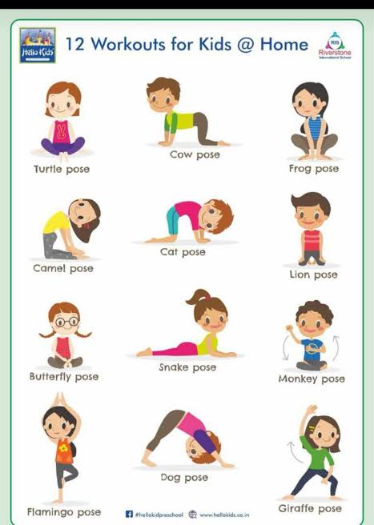

Health Tips for Kids
Maintaining good health is essential for children. Here are some tips to help your child stay healthy:
- Encourage regular physical activity.
- Provide a balanced diet with fruits and vegetables.
- Ensure they get enough sleep each night.
- Teach proper hygiene practices.
- Schedule regular check-ups with a pediatrician.

Nutrition for Kids
Proper nutrition is crucial for a child's growth and development. Here are some guidelines:
- Include a variety of foods from all food groups.
- Limit sugary snacks and drinks.
- Encourage healthy eating habits from a young age.
- Make mealtime a positive experience.
Exercise for Kids
Regular exercise is important for children's physical and mental well-being. Here are some ways to encourage physical activity:
- Find activities your child enjoys.
- Set aside time for active play each day.
- Be a good role model by being physically active yourself.
- Participate in family activities that involve movement.
